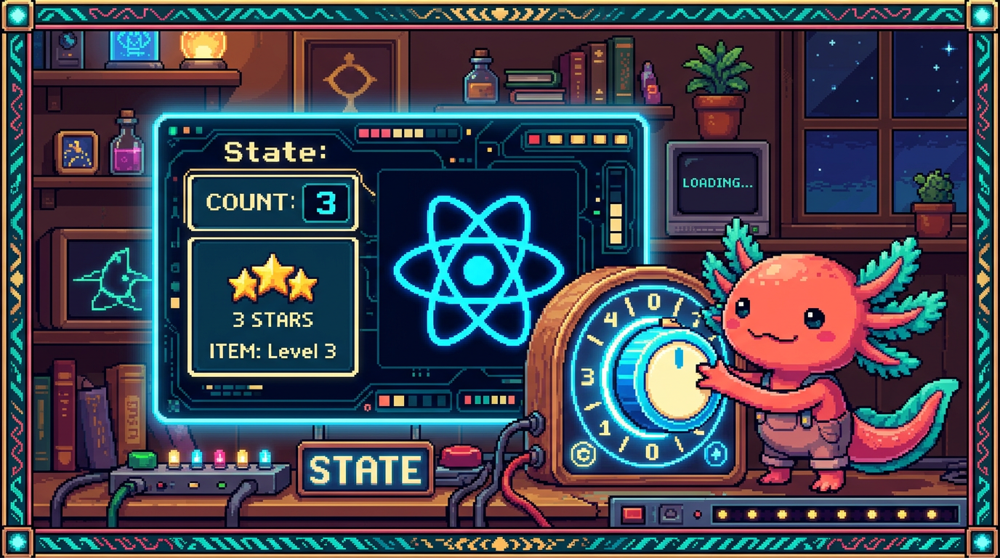
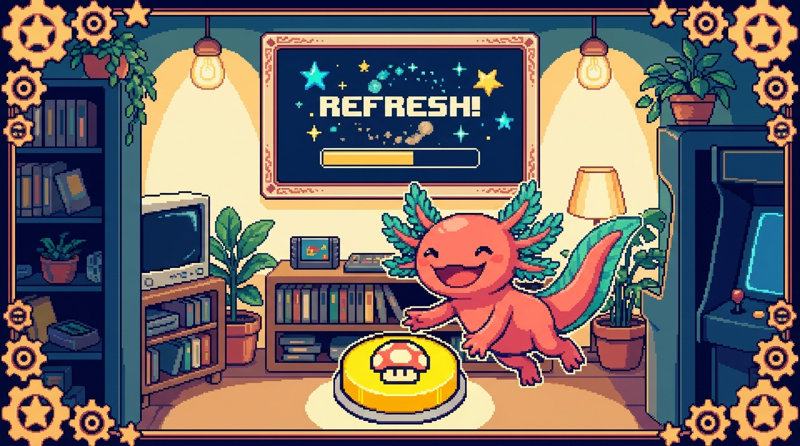

Capítulo 04 — Estado con useState

Las props son datos que llegan de afuera y se quedan quietos. Pero una app viva necesita datos que cambian con el tiempo: un contador que sube, un campo que el usuario va llenando, un menú que se abre y se cierra. A eso lo llamamos estado, y se maneja con tu primer hook:
useState. Es justo lo que hace que React sea "reactivo".

1. Qué es el estado
🟦 ¿Qué significa? — Estado (state)
El estado son los datos que cambian con el tiempo dentro de un componente y que, al cambiar, hacen que la interfaz se vuelva a dibujar para reflejarlos. Si las props son "lo que me dan desde afuera y no toco", el estado es "lo mío, lo que evoluciona aquí dentro". Por ejemplo: el número de un contador, si un menú está abierto o cerrado, o lo que hay escrito en un input.
🟦 ¿Qué significa? — Re-render (volver a renderizar)
Renderizar es "dibujar" el componente en pantalla. Cuando el estado cambia, React vuelve a ejecutar la función del componente y actualiza solo lo que cambió. A eso le decimos re-render. Es la misma magia declarativa del Módulo 06-cap.01: tú cambias el dato y React redibuja; no tocas el DOM a mano.
2. useState: tu primer hook
🟦 ¿Qué significa? — Hook
Un hook ("gancho") es una función especial de React cuyo nombre empieza por
use...y que le da "superpoderes" a un componente: recordar datos, ejecutar efectos, y más. El primero y el que más vas a usar esuseState.🟦 ¿Qué significa? —
useState
useStatecrea una variable de estado dentro de un componente. Te devuelve dos cosas en un array: el valor actual y una función para cambiarlo. ```tsx import { useState } from "react";function Contador() { const [cuenta, setCuenta] = useState(0); // valor inicial: 0
return ( ); }
`` -cuenta→ el valor actual del estado (arranca en0). -setCuenta→ la función que lo cambia. **Siempre** se usa esta función para cambiarlo, nuncacuenta = cuenta + 1directamente. -useState(0)→ ese0es el valor inicial. Cada vez que pulsas el botón,setCuenta` actualiza el estado, React re-renderiza y el número en pantalla sube. Todo sin tocar el DOM. Eso es React.🟦 ¿Qué significa? — La desestructuración
[valor, setValor]
const [cuenta, setCuenta] = useState(0)usa desestructuración de array: saca dos cosas de la lista que devuelveuseState, una por posición. Hay una convención cómoda: la función se llama igual que el estado pero consetdelante (cuenta→setCuenta).
3. La regla de oro: nunca cambies el estado directamente
⚠️ Cuidado — Usa SIEMPRE la función
set...```tsx // ❌ MAL: React no se entera, la pantalla no se actualiza cuenta = cuenta + 1;
// ✅ BIEN: avisa a React, que re-renderiza setCuenta(cuenta + 1);
`` ¿Por qué? Porque la funciónset...` es la que le avisa a React de que algo cambió, y por eso redibuja. Si modificas la variable a mano, React ni se entera y la pantalla se queda igual. Este es el error número uno cuando uno empieza con estado.💡 Tip — Estado basado en el anterior
Cuando el nuevo valor depende del que ya tienes, pásale a
set...una función:tsx setCuenta((anterior) => anterior + 1);Es la forma segura cuando haces varios cambios seguidos. Por ahora solo apréndela de vista; la vas a ver muchísimo.
4. Eventos en React
Para que el estado cambie, casi siempre respondes a un evento del usuario: un clic, una tecla.
Es parecido al addEventListener del Módulo 03, pero más directo y cómodo.
🟦 ¿Qué significa? — Manejadores de eventos en JSX
En JSX, los eventos se ponen como props que empiezan por
on...y reciben una función:tsx <button onClick={() => setAbierto(!abierto)}>Abrir/cerrar</button> <input onChange={(e) => setTexto(e.target.value)} />-onClick→ al hacer clic. -onChange→ al cambiar un campo, es decir, al escribir.e.target.valuees lo que el usuario tecleó. Fíjate en un detalle: le pasas una función (() => ...), no la ejecutas ahí mismo. Y va en camel-case:onClick, noonclick.
5. Un formulario controlado (caso real)
Ahora juntemos estado y eventos. Así se maneja un campo de texto en React:
function Saludo() {
const [nombre, setNombre] = useState("");
return (
<div>
<input
value={nombre}
onChange={(e) => setNombre(e.target.value)}
placeholder="Tu nombre"
/>
<p>Hola, {nombre || "desconocido"} 👋</p>
</div>
);
}
🟦 ¿Qué significa? — Componente/input controlado
Un input controlado es aquel cuyo valor lo gobierna el estado de React (
value={nombre}), y donde cada tecla actualiza ese estado (onChange). Así, la "fuente de la verdad" de lo que hay en el campo es tu estado, no el DOM. Es como RachaSimple maneja sus formularios (crear hábito, check-in). El<p>de abajo se actualiza en vivo mientras escribes: cambia el estado, viene el re-render.🔎 En tu código
Cada vez que en RachaSimple escribes el nombre de un hábito o eliges su color, hay un
useStatedetrás guardando ese valor y volviendo a renderizar la vista previa. Ya conoces el motor que lo mueve.
✅ Checklist — ¿ya domino esto?
- [ ] Distingo estado (cambia adentro) de props (llegan de afuera).
- [ ] Sé qué es un re-render y por qué React lo hace al cambiar el estado.
- [ ] Uso
useState:const [valor, setValor] = useState(inicial). - [ ] Nunca cambio el estado directo; siempre con la función
set.... - [ ] Manejo eventos con
onClick,onChangeye.target.value. - [ ] Entiendo qué es un input controlado.
🧪 Ejercicios
- Lee el contador. En
const [cuenta, setCuenta] = useState(0), ¿qué escuenta, qué essetCuentay qué es el0? - Encuentra el error. ¿Por qué la pantalla no cambia?
<button onClick={() => { abierto = !abierto; }}> - Interruptor. Escribe un componente con un estado booleano
encendidoy un botón que lo alterne (detrueafalse), mostrando "💡 Encendido" o "🌑 Apagado". - Input controlado. Escribe un componente con un
<input>controlado y un<p>que muestre en vivo cuántos caracteres llevas escritos (pista:texto.length). - 💻 Contador real. Cuando tengas la computadora y un proyecto React, crea el
Contadorde la sección 2 y compruébalo: cada clic sube el número sin recargar la página.
➡️ Siguiente: Capítulo 05 — Hooks y efectos.